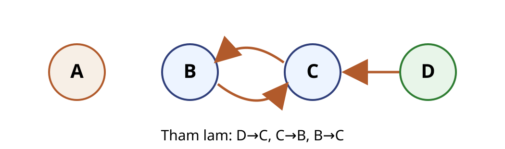
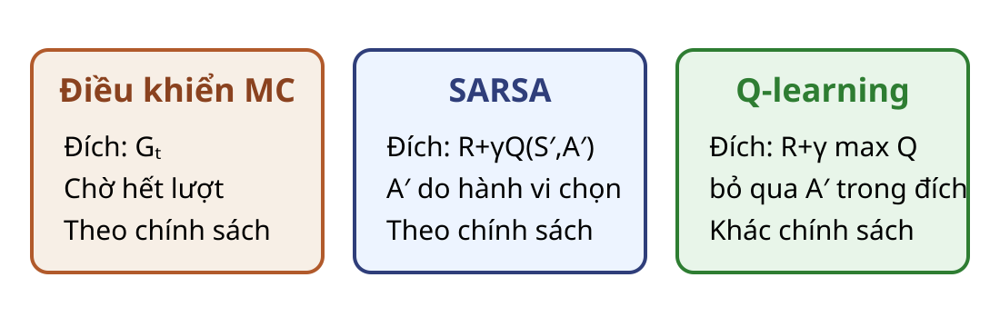

MC control đang xét cập nhật cả ba cặp sau khi lượt kết thúc.
MC control: đầu vào và khởi tạo
Đầu vào
Bộ sinh lượt kết thúc gần chắc chắn.
Return hữu hạn hoặc bị chặn; $\gamma$, $\varepsilon_k$, ngân sách $K$.
Quy tắc lần ghé và bước học.
Khởi tạo
$Q(s,a)$ tùy ý; $Q(\text{kết thúc},\cdot)=0$.
$N(s,a)=0$ nếu dùng trung bình mẫu.
$\pi_1$ là $\varepsilon_1$-tham lam theo $Q$.
Đầu ra: $Q$ và chính sách $g_Q$. Dừng: hết $K$ lượt hoặc tiêu chuẩn đã định trước.
MC control lần ghé đầu tiên
Với k = 1,...,K: 1. Sinh một lượt đến trạng thái kết thúc; giả thiết việc này xảy ra gần chắc chắn. 2. Tính return hữu hạn $G_t$ ngược từ cuối lượt. 3. Với lần xuất hiện đầu của mỗi $(S_t,A_t)$: $N(S_t,A_t)\leftarrow N(S_t,A_t)+1$; $Q(S_t,A_t)\leftarrow Q(S_t,A_t)+(G_t-Q(S_t,A_t))/N(S_t,A_t)$. 4. Với mỗi trạng thái đã ghé, cập nhật $\pi_{k+1}$ thành $\varepsilon_{k+1}$-tham lam theo $Q$.
Lượt dài $T_k$ tốn $O(T_kA_{\max})$ nếu cập nhật chính sách tại các trạng thái đã ghé; quét toàn bảng tốn thêm $O(\sum_s|\mathcal A(s)|)$. Bộ nhớ là $O(\sum_s|\mathcal A(s)|+T_k)$.
Một lượt với trung bình mẫu
Cặp
$Q_0$
$G$
$N$ mới
$Q_1$
$(D,0)$
1
998
1
998
$(C,0)$
1
999
1
999
$(B,0)$
0
1000
1
1000
Các ô còn lại giữ nguyên. Hành động 0 mới trở thành tham lam ở B; tại C và D, nó vẫn tham lam.
Cùng lượt, đổi bước học
Nếu dùng $Q\leftarrow Q+0{,}8(G-Q)$:
Cặp
$Q_0$
$G$
$Q_1$
$(D,0)$
1
998
798,6
$(C,0)$
1
999
799,4
$(B,0)$
0
1000
800
Câu hỏi: vì sao kết quả này khác trung bình mẫu dù lượt giống hệt?
Trung bình mẫu dùng bước $1/N=1$ cho mẫu đầu; bước $0{,}8$ chỉ đi $80\%$ quãng đường tới return.
Cải thiện cần giá trị chính xác
Giả sử $\pi(a\mid s)\ge\varepsilon/m_s$ và đã biết đúng $q_\pi$. Lấy $\pi'$ là $\varepsilon$-tham lam theo $q_\pi$.
Điều thứ nhất bảo đảm tiếp tục học mọi cặp khả đạt; điều thứ hai làm khối xác suất ngoài hành động tham lam tiến về 0.
MC control còn cần lượt kết thúc gần chắc chắn và return bị chặn.
Với trung bình mẫu $1/N$, hoặc bước Robbins–Monro theo từng cặp, $Q(s,a)\to q_*(s,a)$ trên $\mathcal X_{\mathrm{reach}}$; $\alpha=0{,}8$ hằng không thuộc bảo đảm này.
Hành động kế tiếp trong đích SARSA
SARSA và Q-learning đều khởi động lại từ $Q_0$ ở A03.

Trên lượt cố định, sau chuyển $(C,0)\to B$ thì hành động kế tiếp thật sự là $A'=0$, dù hành động tham lam tại B là 1.
Câu hỏi: cập nhật ở C nên đọc $Q(B,0)$ hay $Q(B,1)$ nếu đánh giá đúng hành vi?
Đọc $Q(B,0)$ vì đó là hành động hành vi sẽ thực hiện.
$A_{t+1}\sim\mu_t(\cdot\mid S_{t+1})$ là hành động chính sách đang học sẽ thực hiện.
Thuật toán SARSA dạng bảng
Đầu vào: môi trường, $\gamma$, lịch theo lượt $\varepsilon_k$, lịch theo lần ghé $\alpha_n(s,a)$, ngân sách $K$. Khởi tạo $Q$ và $N(s,a)=0$. Đầu ra: $Q,g_Q$.
Với lượt k = 1,...,K: 1. Reset $S\leftarrow S_0$; chọn $A$ theo $\varepsilon_k$-tham lam. 2. Lặp: thực hiện $A$, quan sát $R,S'$; tăng $N(S,A)$; đặt $\alpha\leftarrow\alpha_{N(S,A)}(S,A)$. Nếu kết thúc: cập nhật với đích $R$; break. Nếu chưa: chọn $A'$ theo $\varepsilon_k$-tham lam; cập nhật với đích $R+\gamma Q(S',A')$; gán $S\leftarrow S'$, $A\leftarrow A'$.
Dừng sau $K$ lượt hoặc tiêu chuẩn đặt trước. Chọn hành động tốn $O(A_{\max})$; bảng tốn $O(|\mathcal X|)$.
SARSA trên lượt dùng chung
$\alpha=0{,}8$, cập nhật tại chỗ.
Chuyển
Đích SARSA
Ô trước
Ô sau
$(D,0)\to C$, $A'=0$
$-1+Q(C,0)=0$
$Q(D,0)=1$
$0,2$
$(C,0)\to B$, $A'=0$
$-1+Q(B,0)=-1$
$Q(C,0)=1$
$-0,6$
$(B,0)\to A$
$1000$
$Q(B,0)=0$
$800$
Kiểm tra cập nhật SARSA
Câu hỏi: nếu thay hành động thăm dò tại B bằng hành động phải, đích và giá trị mới của $Q(C,0)$ là bao nhiêu?
Đích là $-1+Q(B,1)=0$; giá trị mới là $1+0{,}8(0-1)=0{,}2$.
Hội tụ SARSA dạng bảng
Trong MDP hữu hạn, phần thưởng bị chặn và $0\le\gamma<1$, SARSA thỏa $Q(s,a)\to q_*(s,a)$ gần chắc chắn trên $\mathcal X_{\mathrm{reach}}$ nếu:
chính sách hành vi là GLIE với quy tắc phá hòa tất định;
mọi $(s,a)\in\mathcal X_{\mathrm{reach}}$ được cập nhật vô hạn lần;
với từng cặp đó, $\sum_n\alpha_n(s,a)=\infty$ và $\sum_n\alpha_n(s,a)^2<\infty$.
Có thể đọc hai tổng là “tiếp tục học, nhưng nhiễu giảm dần”. Ví dụ $\gamma=1$ và $\alpha=0{,}8$ chỉ minh họa cập nhật, không chứng minh hội tụ.
Một chuyển có hai hành động kế tiếp
Q-learning khởi động lại từ $Q_0$ ở A03.
Sau chuyển $(C,0)\to B$ với $R=-1$, hành vi đã chọn $A'=0$, nhưng bảng có:
Hành động đã lấy mẫu
$Q(B,0)=0$
Hành động tham lam
$\max_aQ(B,a)=Q(B,1)=1$
Câu hỏi: nếu mục tiêu là chính sách tham lam, nên dùng đại lượng nào?
Dùng cực đại bằng 1, không dùng hành động thăm dò đã lấy mẫu.
Hành động $A_t$ do hành vi sinh; đích không dùng $A_{t+1}$ đã lấy mẫu.
Thuật toán Q-learning dạng bảng
Đầu vào: môi trường, $\gamma$, chính sách hành vi $\mu_t$ tại chuyển $t$ với cơ chế bảo đảm mọi cặp trong $\mathcal X_{\mathrm{reach}}$ được cập nhật vô hạn lần, lịch theo lần ghé $\alpha_n(s,a)$, ngân sách $K$. Khởi tạo $Q$ và $N(s,a)=0$. Đầu ra: $Q,g_Q$.
Với lượt k = 1,...,K: 1. Reset $S\leftarrow S_0$. 2. Lặp: chọn $A\sim\mu_t(\cdot\mid S)$; thực hiện $A$, quan sát $R,S'$; tăng $N(S,A)$; đặt $\alpha\leftarrow\alpha_{N(S,A)}(S,A)$. Nếu kết thúc: cập nhật với đích $R$; break. Nếu chưa: cập nhật với đích $R+\gamma\max_aQ(S',a)$; gán $S\leftarrow S'$.
Dừng sau $K$ lượt hoặc tiêu chuẩn đặt trước. Chọn hành động và đọc cực đại tốn $O(A_{\max})$; bảng tốn $O(|\mathcal X|)$.
Q-learning trên cùng lượt
$\alpha=0{,}8$, cập nhật tại chỗ.
Chuyển
Đích Q-learning
Ô trước
Ô sau
$(D,0)\to C$
$-1+\max_aQ(C,a)=0$
$Q(D,0)=1$
$0,2$
$(C,0)\to B$
$-1+\max_aQ(B,a)=0$
$Q(C,0)=1$
$0,2$
$(B,0)\to A$
$1000$
$Q(B,0)=0$
$800$
Ba đích trên một trục

Câu hỏi: thuật toán nào dùng quyết định thăm dò tại B trong đích cập nhật ở C?
SARSA; Q-learning thay quyết định đó bằng cực đại.
Hội tụ Q-learning dạng bảng
MDP hữu hạn, phần thưởng bị chặn và $0\le\gamma<1$.
Mọi $(s,a)\in\mathcal X_{\mathrm{reach}}$ được cập nhật vô hạn lần dưới chính sách hành vi $\mu_t$.
Với từng cặp đó: $\sum_n\alpha_n(s,a)=\infty$ và $\sum_n\alpha_n(s,a)^2<\infty$.
Dưới các giả thiết này, $Q(s,a)\to q_*(s,a)$ gần chắc chắn trên $\mathcal X_{\mathrm{reach}}$.
$\gamma=1$, $\alpha=0{,}8$ và một lượt chỉ minh họa phép cập nhật; chúng không chứng minh hội tụ.
Dự đoán khác chính sách: điều kiện hỗ trợ
Để đánh giá chính sách cố định $\pi$ từ dữ liệu của $\mu$, mọi cặp khả đạt mà $\pi$ có thể chọn phải thỏa:
$\pi(A_t\mid S_t)=1$, $\mu(A_t\mid S_t)=0{,}25$ nên $\rho_t=4$.
Giao diện
Đầu vào: $\pi$, $\mu$, $V_0$, $\gamma$, $\alpha$ và luồng chuyển. Đầu ra: $V$; dừng theo ngân sách.
Nếu $S_{t+1}$ kết thúc, đặt $V(S_{t+1})=0$. Mỗi chuyển tốn $O(1)$ chỉ khi xác suất bảng của $\pi$ và $\mu$ được đọc trực tiếp.
Ba thuật toán, ba cơ chế
MC control đang xét
SARSA
Q-learning
Đích
$G_t$
$R+\gamma Q(S',A')$
$R+\gamma\max_aQ(S',a)$
Cập nhật
sau lượt
sau chuyển
sau chuyển
Quan hệ chính sách
theo chính sách
theo chính sách
khác chính sách
Điều kiện hành vi
GLIE và lượt kết thúc
GLIE
cập nhật vô hạn từng cặp
GLIE gồm độ phủ vô hạn và tham lam ở giới hạn; bảo đảm hội tụ còn cần bước học phù hợp.
Chi phí của biểu diễn bảng
Bộ nhớ của cả ba phương pháp: $O(|\mathcal X|)$; MC còn giữ lượt $O(T)$.
SARSA đọc một giá trị $Q(S',A')$ trong $O(1)$, nhưng chọn $A'$ theo $\varepsilon$-tham lam có thể cần quét $\mathcal A(S')$.
Q-learning đọc cực đại bằng cách quét $\mathcal A(S')$ nếu không duy trì cấu trúc phụ.
Số mẫu để đạt một sai số cho trước còn phụ thuộc độ phủ, nhiễu, bước học và động lực MDP.
Chặn Hoeffding chỉ cho một trung bình cố định
Với chính sách và phân phối khởi đầu cố định, nếu $G_1,\ldots,G_n$ là các return i.i.d., $G_i\in[L,U]$ và $0<\delta<1$, thì với xác suất ít nhất $1-\delta$:
Đây là chặn điểm cho một đại lượng vô hướng cố định.
Không phải chặn đồng thời cho mọi trạng thái, mọi chính sách hoặc quá trình điều khiển thích nghi.
Phạm vi kết luận và bước tiếp theo
Điều khiển phi mô hình bảng học $Q$ từ trải nghiệm và cải thiện chính sách.
MC dùng return; SARSA dùng hành động kế tiếp; Q-learning dùng cực đại.
GLIE, độ phủ và Robbins–Monro là các giả thiết phải kiểm tra.
Bài 07 thay bảng giá trị bằng hàm xấp xỉ và xét lại các bảo đảm hội tụ.
Bài tập: quy tắc số không phải bộ lấy mẫu
Dùng dãy $u_t$ và quy tắc cổng đã nêu trong ví dụ chung.
Tái tạo lượt và ba return.
Giải thích vì sao dãy tuần hoàn không kiểm chứng được phân phối $\varepsilon$-tham lam.
Lượt là $(D,0)\to(C,0)\to(B,0)\to A$; các return là 998, 999, 1000. Sau cổng 0,2 luôn là 0,4 nên nhánh thăm dò không được lấy mẫu đều, độc lập.
Bài tập: đối chiếu ba bảng cập nhật
Trên cùng lượt $(D,0)\to(C,0)\to(B,0)\to A$, dùng $Q_0$, $\gamma=1$, $\alpha=0{,}8$.
Tính ba ô thay đổi của MC, SARSA và Q-learning.
Chỉ ra và giải thích ô khác giữa hai phương pháp TD.
Đích và cập nhật tại C thay đổi thế nào nếu $A_{t+1}$ tại B là 1?
MC: $798{,}6;799{,}4;800$. SARSA: $0{,}2;-0{,}6;800$. Q-learning: $0{,}2;0{,}2;800$. Nếu $A_{t+1}=1$ tại B, đích SARSA tại C dùng $Q(B,1)=1$, nên $Q(C,0)=0{,}2$, trùng Q-learning tại ô đó.
Bài tập: sửa một lập luận hội tụ
Báo cáo ghi: “$\varepsilon_k=1/k$ và $\alpha=0{,}1$, nên SARSA chắc chắn hội tụ về $q_*$.”
Liệt kê giả thiết còn thiếu và lỗi Robbins–Monro.
Đề xuất một lịch $\alpha_n(s,a)$ hợp lệ và cách kiểm tra độ phủ.
Nêu phần nào của kết luận thay đổi đối với Q-learning.
Cần MDP hữu hạn, thưởng bị chặn và $\gamma<1$; có thể dùng $\alpha_n(s,a)=1/n$. SARSA còn cần GLIE. Q-learning không cần hành vi tham lam ở giới hạn, nhưng cả hai vẫn cần mọi cặp trong $\mathcal X_{\mathrm{reach}}$ được cập nhật vô hạn và Robbins–Monro theo từng cặp.